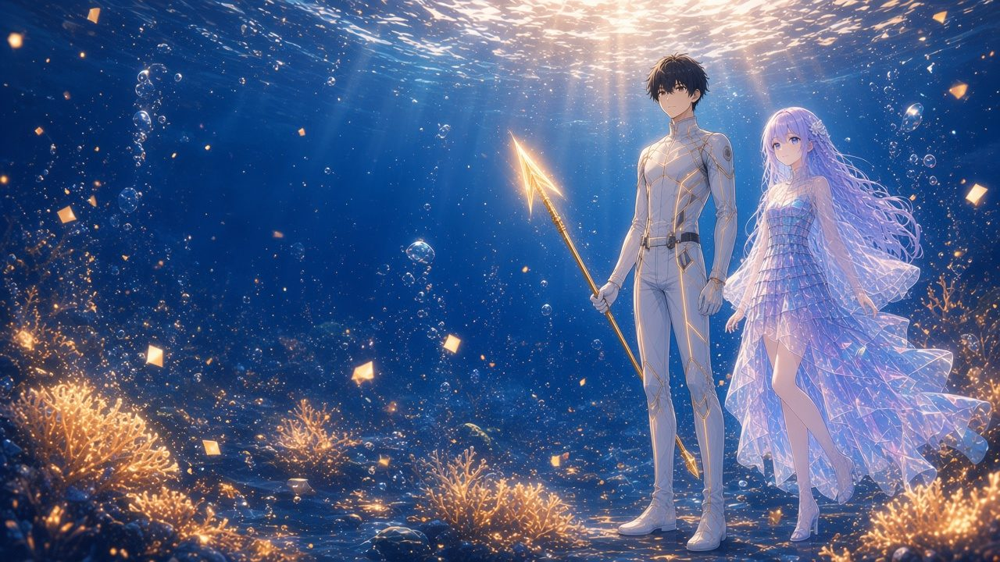

計算する深海と、名前のない僕ら。
海も光も計算されている。計算できないものだけが、僕らの側に残る。
このサイトで連載予定
『潜って。名前を、なくさないで。』
STORYあらすじ
二〇三五年、東京。
僕の仕事は、世界の終わらせ方を作ることだった。運営を終えるゲームの“最後の一日”を設計する仕事。けれどその席は、四分で最適な最後の夜を書きあげるAIに譲ることになった。
職を失ったその夜、23:14。半年前に亡くなった恩師から、遺言配送の荷物が届く。中には、眠ったまま意識を夢の海へ潜らせる銀色の輪と、一枚のメモ。
『潜って。名前を、なくさないで。』
接続先は《VERDANT//ZERO》。世界中の海底ケーブルと観測データを“海水”にして育つ、運営会社も管理者もいない深海。
名前を入力した瞬間、文字は小さな泡になって沈み、表示名は【？？？】になった。
体は泡殻（ほうかく）。命の厚みはHP。潜れる深さは耐圧PRS。そして、高いほど強く、高いほど壊れやすい〈FRG（儚さ）〉。ダメージの数字が泡になって弾けるたび、設計者だった僕は、その気持ちよさに負けていく。
七秒ごとに同じ笑顔をくり返す案内役。名札が三つに揺れる商人。眠りの中でしか会えない仲間たち。
最深部、深度20,000mの〈零溝（ゼロ・トレンチ）〉を目指して――名前のない僕の潜行記録が、はじまる。
LINESことば
「なぜ泡は、弾けなければならない？」
死んだ人から、荷物が届いた。
運営会社も、管理者もいない。眠った人だけが潜れる海。
「16」
数字は少しふくらみ、それから――ぱちん、と。
数字の泡が弾けた。【FRG（儚さ）：高いほど強く、高いほど壊れやすい】
壊れやすさが、ステータスになっている。「数字は、嘘をつかないよ」
「つくのは、数字を描いた人間だ」
弾けるから、美しい。終わりのある泡だから、その一瞬に全部の意味が宿る。
NEWSおしらせ
- SOON
- 小説『VERDANT//ZERO』このサイトで連載予定
- SOON
- ブラウザRPG『VERDANT//ZERO』近日公開
- SOON
- オートチェス『泡沫闘技場』近日公開
#VERDANTZERO